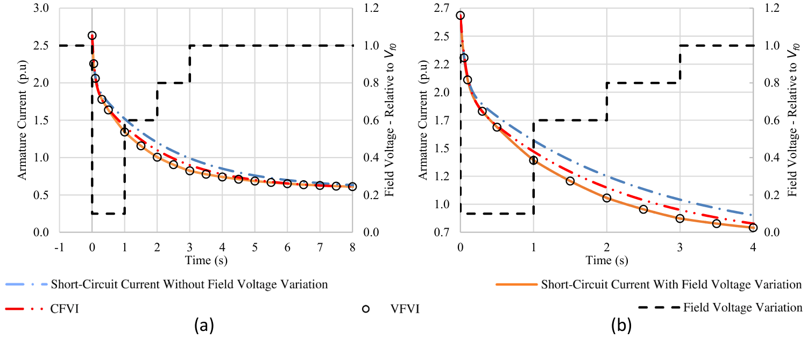

Identifying synchronous-machine parameters under varying field voltage
Generator parameters help engineers study faults and power-system stability. A sudden short-circuit test estimates these parameters from the decay of the machine’s current. The conventional formulation assumes a constant field voltage, but the excitation system can change that voltage during the test. This project examines how those changes affect parameter estimates and develops a method that accounts for them.
This project originated in my bachelor’s thesis at the Federal University of Itajubá and research at EXCEN, with Edson da Costa Bortoni and José Vitor Bernardes Júnior. The thesis was completed in 2018, in Portuguese, and led to the 2020 journal article.

Figure 4 of Faria et al. (2020) compares the simulated current under varying field voltage (orange), a fit that assumes constant voltage (red), and the proposed fit (open circles). The black dashed line shows field voltage on the right axis; the second panel enlarges the first four seconds.
Accounting for changing excitation
The model represents a changing field voltage as a sequence of small steps and derives how each step changes the armature current. A nonlinear fitting procedure then estimates the machine parameters from the current response and field-voltage history. The study compares this variable-field-voltage interpolation with the conventional constant-field-voltage formulation.
A second algorithm varies the depth and duration of a voltage drop and calculates the resulting estimation errors. It identifies combinations for which the conventional formulation stays within a chosen tolerance, helping determine when the correction is needed.
Results for a simulated generator
The methods are evaluated using simulations of a 140 MVA synchronous machine with manufacturer-measured parameters. In the imposed voltage-variation case, the conventional fit produced a 24.44% error in the subtransient time constant; the proposed fit reduced that error to 0.08%. The transient time-constant error also fell, from −14.43% to 0.01% in the same case.
The voltage-tolerance analysis shows that duration matters as well as magnitude. A brief, deep drop and a longer, smaller drop can have very different effects on parameter estimates. Stricter accuracy targets sharply reduce the acceptable region for the conventional method.
When the method applies
Combining a physical model with nonlinear parameter estimation makes it possible to account for excitation changes and assess the error introduced when they are ignored.
The numerical results and tolerance curves apply to the studied machine and imposed voltage profiles. For small machines with very fast transients, estimating an RMS current envelope can lose information between successive peaks. Further evaluation across machine sizes and uncertainty in the reference parameters would help establish the method’s broader applicability.